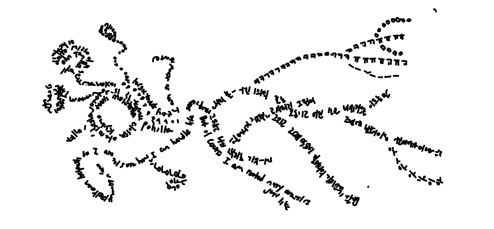
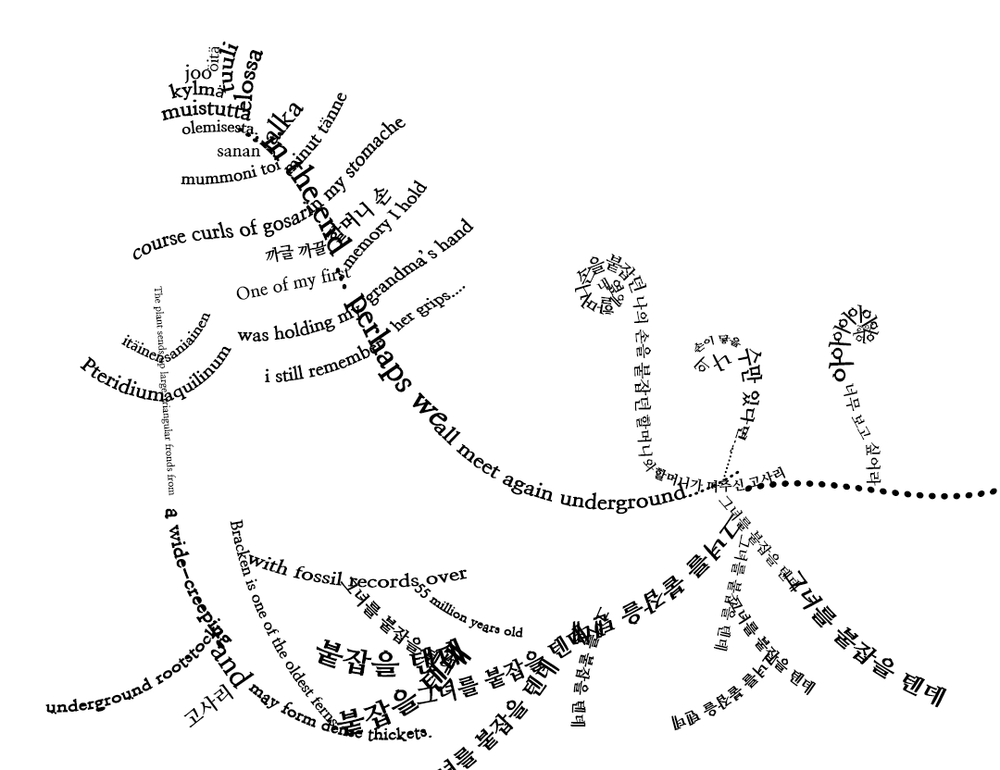
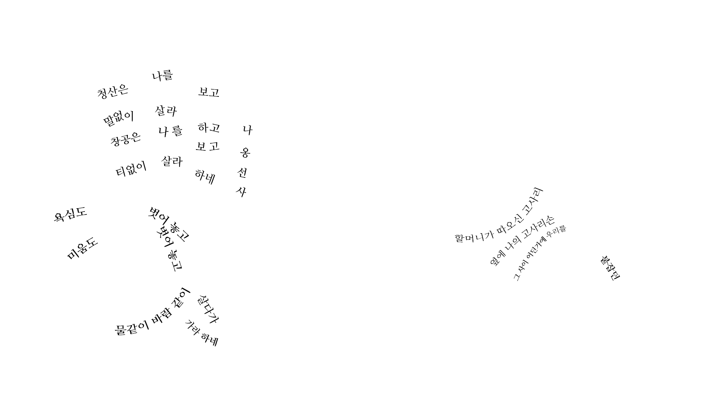

Keywords
Halmoni (할머니)
Halmoni (할머니) means “grandma” in Korean. My Halmoni was a tough and loving woman. Born in 1938 in the Korean countryside (Cheongju), she moved to Seoul in her late 20s for better opportunities. She tried many jobs: small grocery store vendor, noodle factory worker, swimming pool tube seller, and hostel owner. She was also a mother of five sons. Up until I was 5, she took care of me and my brother in Seoul since our parents had to work long hours. Then when we were sent to the U.S. when I turned 10, Halmoni eventually moved to take care of and feed us. She passed away in 2022 due to covid-19. Her body lies underground in Jeondong-myeon, near her hometown.
Gosari (고사리)
Gosari (고사리) means many related things. First, it is what Koreans call the bracken fern (Pteridium aquilinum). Second, the name is used to refer specifically to the fern’s fiddleheads, which is the part Koreans like to boil, sun-dry, and eat (the Korean Gosari dish is known as Gosari Namul). Lastly, Gosari can refer to specifically the Eastern bracken fern (P. aquilinum latiusculum) – the subspecies of bracken fern that is found in East Asia, Northern Europe, and some parts of North America.
In this essay, I will use Gosari mostly to refer to the general species of Pteridium aquilinum.
Gosari Hands (고사리 손)
Gosari Hands (고사리 손) is a Korean metaphorical expression of a child's hands. Both children’s hands and Gosaris (fiddleheads) are small and curly.
Memories of Halmoni and Gosari
One of the first memories of my life is touch: holding hands with my Halmoni. My small and curly Gosari hands held onto her thick and bulky fingers as we walked the sunny days of Seoul. Although rough and weathered from years of manual labor, Halmoni’s hands still carried a sense of softness and warmth. Halmoni passed away a few years ago, but I vividly remember the sensation of holding them. So vivid that I can feel them in my fingers.
Another early memory rushes through, and this time it is of smell, taste, and digestion. Halmoni could pull off many dishes, but my favorite of hers was Gosari Namul. I remember sitting in her kitchen, taking in the scent of perilla oil mixed with the aroma of the Gosari that she foraged with her rough hands. In response, my Gosari hands pick up a pair of chopsticks too big for me. I reach for the Namul and bit into it. It’s both rough and soft like my grandma. It tastes like earth. Subtle sweetness slowly seeps out as I chew. I eat a spoonful of freshly-cooked rice to balance things out. I can feel the sunlight on my back and the warmth in my stomach. My belly holds this memory.
Gosari as an Agent
Gosaris, or bracken ferns, are not still objects. They are agents that also move, act, and influence.
Brackens, just like me and my grandmother, are migrants. Although their place of origin is unclear, they have managed to spread all over the world. They are found in all continents except Antarctica and in all environments except deserts.[1] In fact, the common bracken is one of the five most abundant plants on earth, as they are very difficult to control.[2]
There are two main ways bracken ferns move. They can migrate either by spreading spores or expanding their rhizomatic roots deeper. Their spores, produced and usually dispersed in summer and autumn, can travel long ways by the wind. Their rhizomes can be 2 to 10 mm in diameter and several metres in length.[3]
Bracken ferns’ stories are intermingled with those of others. Brackens are known to be allelopathic – meaning, they produce biochemicals that influence the growth of another plant. For example, they are known to inhibit the growth of certain pioneer plant species by releasing aqueous extracts [4]. They also excrete hydrogen cyanide (highly poisonous gas) when their fronds get damaged.[5]
But bracken ferns also help the growth of other beings. They can be a substitute for woodland canopies, offering shades to plants like common bluebells, chickweed wintergreen, and common dog violet . They are also a place of growth, as fungi like Camarographium stephensii grow primarily from dead bracken stems. Various insects utilize brackens as a food source or hunting tools.[6]
With fossil evidence suggesting their existence from as early as 55 million years ago, they have been migrating and acting since ancient times.[7] One can only imagine what kind of stories are held inside them. In the next section, I use sketches and visual poems as ways of imagining their stories and integrating them to mine.
Sketches
Initial Sketches
Here are my first sketches (in visual poem format) that play with the structures of fern brakes and hand lines. I use different words related to my Gosari research. For the first two, I start out with Korean as the root (my mother tongue), English in the middle (my second language and the language I’ve used the most in my life), and Finnish at the top (most recently learned language and the language of the country I’m currently based in).

